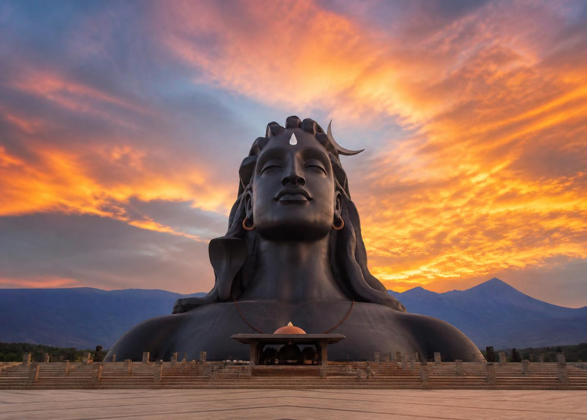

Where to Stay Near Adiyogi Shiva Statue in Coimbatore?

Table of Contents
Why Adiyogi Attracts Millions of Travelers
Standing at a towering height of 112 feet at the base of the Velliangiri Mountains, the Adiyogi Shiva Statue is recognized by Guinness World Records as the largest bust sculpture in the world. Consecrated by Sadhguru, it represents the 112 ways to attain liberation through yoga and inner well-being. Today, visitors from across India and around the globe travel to Coimbatore specifically to witness this awe-inspiring landmark, sit before the consecrated Yogeshwar Linga, and experience the nightly laser projection.
If you are planning your journey, a central question arises: where to find a peaceful, affordable stay near Adiyogi?
The Evening Divya Darshanam & Night Commute Challenge
One of the primary highlights of any Adiyogi visit is the spectacular Divya Darshanam—a 14-minute 3D laser projection mapped directly onto the 112-foot statue, depicting how Adiyogi offered the yogic sciences to humanity. The show takes place every evening at approximately 7:00 PM (with an additional weekend showing depending on crowd volume).
Here is why your accommodation location matters immensely:
- The Post-Show Exit Rush: Thousands of visitors conclude their visit between 7:30 PM and 8:30 PM. Exit roads experience heavy congestion, and finding app-based cabs (Uber/Ola) back to Coimbatore city becomes difficult and exorbitantly priced.
- 30 km Return Commute: If your hotel is located in Gandhipuram, RS Puram, or Coimbatore Railway Station, you face a 60–90 minute night drive along poorly lit rural state highways.
- The Proximity Advantage: By choosing a budget stay near Adiyogi in nearby Semmedu, your travel time after the show is only approximately 10 minutes (~2.2 km). You return to a quiet room without fatigue.
Where to Stay: City Center vs. Semmedu Village
When selecting where to stay near Adiyogi, travelers frequently compare city hotels with village homestays:
| Factor | Coimbatore City Hotels | Semmedu Homestays (Nisha Home Stay) |
|---|---|---|
| Distance to Adiyogi | 30 – 35 km | Approximately 2.2 km |
| Drive Time | 60 – 90 minutes | Approximately 10 minutes |
| Post-Laser Show Commute | Stressful night highway drive | Quick, peaceful 10-min drive |
| Atmosphere | Urban traffic & commercial noise | Tranquil village mountain views |
| Starting Rate | ₹2,500 – ₹5,000+ | From ₹1,500 / 24 hours |
Budget Stay Near Adiyogi: What to Expect
A reliable budget stay near Adiyogi should provide complete privacy, clean linen, modern sanitation, and high-speed connectivity. Many spiritual visitors spend the morning hours meditating at the Dhyanalinga inside Isha Yoga Center (~1.8 km from Semmedu), return to their rooms to rest during peak midday heat, and head back to Adiyogi for the evening lights.
Having independent 1BHK accommodation ensures you have plenty of room to stretch, relax, unpack, and feel completely at ease.
Transport, Parking and Night Access
Reaching Adiyogi from Semmedu is exceptionally easy:
- By Car / Taxi: Follow the well-paved Siruvani / Isha road. The drive takes only 8–10 minutes. Ample vehicle parking is provided at Adiyogi visitor parking.
- By Local Auto: Auto rickshaws operate regularly between Semmedu junction and the Adiyogi bus terminus.
- By Public Bus: Frequent TNSTC buses (Route 14D) connect Coimbatore Gandhipuram to Isha/Adiyogi, stopping directly in Semmedu.
Staying at Nisha Home Stay (~2.2 km from Adiyogi)
Nisha Home Stay is located at 330/1, NGR Street in Semmedu. We provide three private, furnished 1BHK units designed to offer spiritual travelers, families, and couples a peaceful stay near Adiyogi:
- Distance: Approximately 2.2 km to Adiyogi Shiva Statue (10 mins) and 1.8 km to Isha Yoga Center (8 mins).
- Comfort: AC and Non-AC bedrooms, spacious living hall, clean attached bathrooms with instant hot water.
- Convenience: Dedicated vehicle parking, high-speed Wi-Fi, refrigerator, and home-cooked meals upon request.
- Value: Transparent pricing starting from ₹1,500 per day for solo travelers up to ₹3,500 for family groups of up to 7 guests.